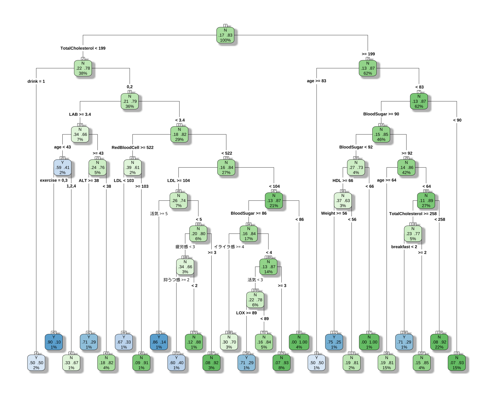
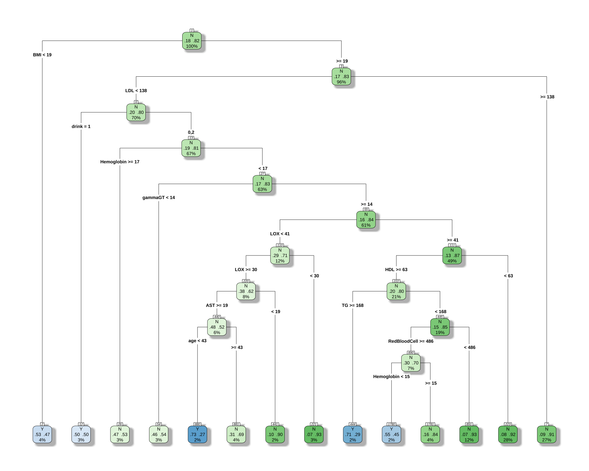
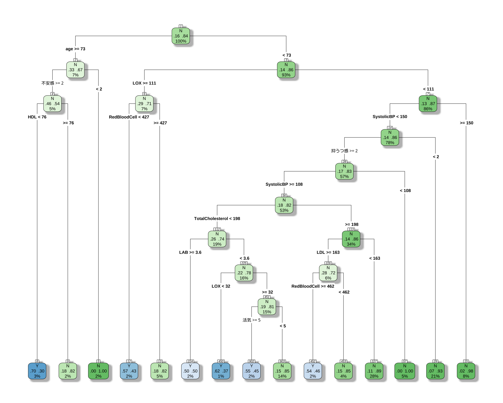

| age | sex | Weight | LOX | LAB | type | BMI | med | RedBloodCell | Hemoglobin | HbA1c | AST | ALT | gammaGT | TotalCholesterol | TG | BloodSugar | HDL | LDL | UrineSugar | SystolicBP | DiastolicBP | drink | smoke | exercise | breakfast | 活気 | イライラ感 | 疲労感 | 不安感 | 抑うつ感 |
|---|---|---|---|---|---|---|---|---|---|---|---|---|---|---|---|---|---|---|---|---|---|---|---|---|---|---|---|---|---|---|
| 64 | 2 | 54.2 | 86 | 2.6 | N | 22.8 | 2 | 438 | 13.0 | 5.8 | 24 | 23 | 70 | 243 | 70 | 96 | 93 | 135 | -1 | 151 | 97 | 0 | 0 | 4 | 2 | 3 | 1 | 1 | 1 | 1 |
| 48 | 2 | 52.7 | 75 | 2.2 | N | 22.1 | 2 | 452 | 14.0 | 5.5 | 23 | 18 | 25 | 282 | 64 | 91 | 97 | 171 | -1 | 131 | 85 | 2 | 1 | 4 | 2 | 3 | 3 | 4 | 3 | 3 |
| 53 | 2 | 64.8 | 55 | 2.8 | Y | 26.0 | 2 | 464 | 13.9 | 5.5 | 16 | 14 | 19 | 262 | 106 | 99 | 69 | 171 | -1 | 109 | 75 | 0 | 0 | 2 | 2 | 4 | 2 | 4 | 3 | 2 |
| 46 | 1 | 76.3 | 136 | 3.8 | N | 26.0 | 2 | 553 | 16.3 | 5.9 | 17 | 16 | 56 | 221 | 148 | 107 | 50 | 139 | -1 | 132 | 95 | 2 | 2 | 1 | 2 | 2 | 3 | 2 | 3 | 2 |
| 65 | 1 | 72.4 | 58 | 2.3 | Y | 26.2 | 2 | 520 | 16.4 | 5.4 | 16 | 10 | 28 | 201 | 97 | 90 | 77 | 104 | -1 | 136 | 88 | 2 | 2 | 3 | 2 | 2 | 3 | 1 | 2 | 1 |
| 30 | 1 | 59.5 | 46 | 2.2 | N | 19.5 | 2 | 555 | 16.0 | 5.2 | 18 | 18 | 26 | 185 | 169 | 89 | 49 | 103 | -1 | 120 | 73 | 0 | 0 | 1 | 2 | 3 | 5 | 4 | 5 | 4 |
弘前データ６：法定検診項目＋ストレスチェックにより，A, C, D を予測する方法
備考は全て外し，LOX_Index と 判別式 も説明変数としては考慮しない．
1 CART モデル
library(rpart)Warning: パッケージ 'rpart' はバージョン 4.3.3 の R の下で造られましたlibrary(rpart.plot)Warning: パッケージ 'rpart.plot' はバージョン 4.3.3 の R の下で造られました# 目的変数が5クラスになっても、式は同じ
# rpartが自動で多クラス分類として扱ってくれる
cart_model_5class <- rpart(
type ~ ., # 目的変数を5クラスのものに変更
data = df_filtered,
method = "class",
control = rpart.control(cp = 0.001)
)
printcp(cart_model_5class)
Classification tree:
rpart(formula = type ~ ., data = df_filtered, method = "class",
control = rpart.control(cp = 0.001))
Variables actually used in tree construction:
[1] age ALT BloodSugar breakfast
[5] drink exercise HDL LAB
[9] LDL LOX RedBloodCell TotalCholesterol
[13] Weight イライラ感 活気 疲労感
[17] 抑うつ感
Root node error: 193/1162 = 0.16609
n= 1162
CP nsplit rel error xerror xstd
1 0.0082902 0 1.00000 1.0000 0.065733
2 0.0077720 10 0.89637 1.1554 0.069554
3 0.0062176 12 0.88083 1.1865 0.070258
4 0.0051813 17 0.84974 1.3316 0.073304
5 0.0038860 20 0.83420 1.3420 0.073508
6 0.0010000 24 0.81865 1.3782 0.074205# 決定木を可視化
rpart.plot(
cart_model_5class,
type = 4,
extra = 104, # 各ノードのクラス別サンプル数を表示
box.palette = "auto", # 色を自動で設定
shadow.col = "gray",
nn = TRUE
)
やはり最初から「女性ならばほとんど Type B だ」と決めつけている．
2 男女で違う CART モデルを推定する
男性の場合正答率が６割しか出ないが，女性の場合は８割出る．これは女性の方に C, E type がないためである．
2.1 男性の場合
「 BMI が小さくて多様性が３ならば A タイプ」というルールは変わらないようである．
library(rpart)
library(rpart.plot)
df_male <- df_filtered %>%
filter(sex == 1)
# 目的変数が5クラスになっても、式は同じ
# rpartが自動で多クラス分類として扱ってくれる
cart_model_5class <- rpart(
type ~ ., # 目的変数を5クラスのものに変更
data = df_male,
method = "class",
control = rpart.control(cp = 0.005)
)
printcp(cart_model_5class)
Classification tree:
rpart(formula = type ~ ., data = df_male, method = "class", control = rpart.control(cp = 0.005))
Variables actually used in tree construction:
[1] age AST BMI drink gammaGT
[6] HDL Hemoglobin LDL LOX RedBloodCell
[11] TG
Root node error: 82/446 = 0.18386
n= 446
CP nsplit rel error xerror xstd
1 0.0121951 0 1.00000 1.0000 0.099765
2 0.0097561 1 0.98780 1.5000 0.115099
3 0.0060976 11 0.89024 1.5366 0.115952
4 0.0050000 13 0.87805 1.6098 0.117563# 決定木を可視化
rpart.plot(
cart_model_5class,
type = 4,
extra = 104, # 各ノードのクラス別サンプル数を表示
box.palette = "auto", # 色を自動で設定
shadow.col = "gray",
nn = TRUE
)
# 予測値を取得
predictions <- predict(cart_model_5class, newdata = df_male, type = "class")
# 混同行列を作成
confusion_matrix <- table(Actual = df_male$type, Predicted = predictions)
print(confusion_matrix) Predicted
Actual Y N
Y 34 48
N 24 340# 正答率を計算
accuracy <- sum(predictions == df_male$type, na.rm = TRUE) / sum(!is.na(df_male$type))
cat("正答率:", round(accuracy * 100, 2), "%\n")正答率: 83.86 %58% の正解率が 71% になる．
2.2 女性の場合
library(rpart)
library(rpart.plot)
df_female <- df_filtered %>%
filter(sex == 2)
cart_model_5class <- rpart(
type ~ .,
data = df_female,
method = "class",
control = rpart.control(cp = 0.001)
)
printcp(cart_model_5class)
Classification tree:
rpart(formula = type ~ ., data = df_female, method = "class",
control = rpart.control(cp = 0.001))
Variables actually used in tree construction:
[1] age HDL LAB LDL
[5] LOX RedBloodCell SystolicBP TotalCholesterol
[9] 活気 不安感 抑うつ感
Root node error: 111/716 = 0.15503
n= 716
CP nsplit rel error xerror xstd
1 0.024024 0 1.00000 1.0000 0.087249
2 0.009009 3 0.92793 1.1712 0.092927
3 0.003003 5 0.90991 1.3153 0.097126
4 0.001000 14 0.87387 1.3514 0.098101rpart.plot(
cart_model_5class,
type = 4,
extra = 104,
box.palette = "auto",
shadow.col = "gray",
nn = TRUE
)
# 予測値を取得
predictions <- predict(cart_model_5class, newdata = df_female, type = "class")
# 混同行列を作成
confusion_matrix <- table(Actual = df_female$type, Predicted = predictions)
print(confusion_matrix) Predicted
Actual Y N
Y 48 63
N 34 571# 正答率を計算
accuracy <- sum(predictions == df_female$type, na.rm = TRUE) / sum(!is.na(df_female$type))
cat("正答率:", round(accuracy * 100, 2), "%\n")正答率: 86.45 %少ない変数でやったときはタイプ B 259 人から，261 人になっただけだったが，今回はもう少し増えるようだ．